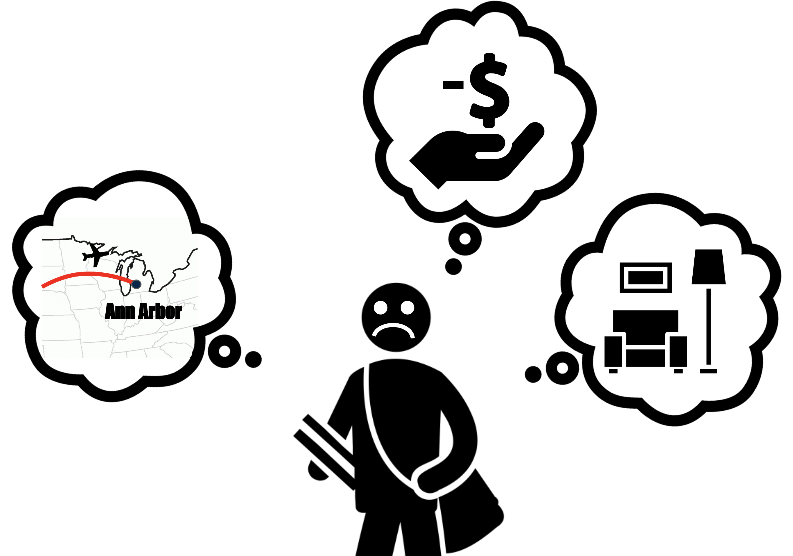

Education Course Project
Dec 2018
- Ideation
- Sketches
- Storyboards
- Personas
- Paper Prototype
- nteractive Prototype
- App Design
- UX Design
- Visual Design
- Interaction Design
- UX Research
As an incoming student at the University of Michigan, I was excited to think about making new friends and taking classes. But, before doing all these fun stuff, I realized that I neither had a bed to sleep in nor bought a drawer to store my clothing. Fortunately, I found out that my housing was fully furnished. However, I still needed to buy a lot more household necessities.
In fact, this struggle happens every Fall when newcomers move into a new environment. Students are in a rush to get essentials for their new home and spend a lot of money on purchasing items to settle down. I was able to easily find many peers complain about the same problem I had and wanted to make an intervention.
As newcomers’ pain points in settling down on campus resonated with me, I decided to first fully understand the target users and to explore opportunities to provide a system to solve the students’ problem.
Settling down is a huge hassle for students There is no accommodation or system to help these newcomers with preparing necessities to settle down on campus
The application MCycle solves the University of Michigan newcomers’ problem of settling down by allowing them to purchase inexpensive second-hand products left from moving out students. In addition to joining the market, students can also participate in the Planet Blue sustainability program by simply donating and purchasing items through the application.
I implemented participatory design by involving users in multiples statges to clarify the user needs while refining the design solution. The whole process consisted of five main steps:
- Conducting and analyzing user research throughout the project by interviewing potential users and the target population
- Conducting desk research based on the interviews to consolidate design concepts and ideas
- Generate ideas by sketching multiple solutions and develop into storyboards
- Create paper prototyping and implement iterative design process based on the usability testing
- Design an interactive prototype to present a complete product
I first looked into my own experiences I encountered while I was settling down during my first week in Ann Arbor. Then I was able to generate questions and gain feedback from users throughout the whole process of design development in order to create a system for target users other than myself. Here is a list of some questions I asked users:
- what did students feel and thought when you first arrived in Ann Arbor?
- What frustrated them upon their arrival?
- What process did they have to go through in order to sleep, eat and rest during the first week?
- What did students buy as soon as they arrived on campus?
- What services or systems would be valuable to the users?
I interviewed students about their experiences with gathering necessities for settling down. My goal was to learn about what students do in order to settle down and how users purchase household necessities.
Below are the main pain points and insights:
Pain point 1: Second-hand items are on the market during Spring-Summer
Users attempted to purchase second-hand items from moving out students before moving into the campus. However, newcomers were not able to pick up or purchase items as moving out students were throwing out and selling used goods on April-June, needing buyers to pick up items as soon as possible. The transfer issue often hinders students’ preliminary arrangements for settle down and further causes frustrations of users.
“I bought a bed frame from another friend during Summer, but it was hard to find a way to transfer the item because most students were moving out or not on campus”
Pain Point 2: Lack of time to explore inexpensive products
Once newcomers move in, the first thing they need to do is gathering basic household goods to eat and sleep. But, students have limited time to spend on buying household necessities as the semester begins. Thus, they have less time to explore different options and spend a lot of money on the necessities or even live without them for a while until they find affordable ones.
“I had to sleep on the floor for few days until I luckily found a used mattress right after I arrived on campus…”
Pain Point 3: Too many options and poor UX
Even when newcomers decide to use second-hand market platforms, they face a problem of choosing one among a number of various mobile apps or websites. Furthermore, some find many of the markets difficult to navigate products.
I initially thought that users had difficulty settling down after their arrival. in fact, however, I found out that their problem began even before moving in because they wanted to purchase expensive products in advance to save money and time.
In conclusion, I learned that my product should not only allow students to purchase inexpensive goods but also have a systematic way of storing sold items for newcomers.
Armed with the knowledge of the waste issue from moving out students based on the interviews, I believed that these thrown out items could be useful to newcomers. Thus, I conducted desk research on how the university is coping with this problem. I learned that the University of Michigan gathers the waste coming out from move out every year and recycle or donate. This finding was later incorporated into three of my possible solutions.

Sketches for brainstorming unique solutions

Storyboards developed based on the 8 unique solutions
For brainstorming, I came up with a number of ideas that could solve the newcomers’ problems. Based on the existing products and prior research, I explored crazy ideas and narrowed them down to 8 sketches of solutions. Then I developed them into 8 storyboards to share with potential users and gain feedback.

Sharing ideas with a potential user for final solution
Provide full “accessibility” outside of campus and promote “sustainability”
Sharing 8 solutions with users, I learned that users wanted solutions that could deal with the inconvenience of purchasing used items before moving in from other places. They also mentioned the importance of a systematic platform that could streamline the process of searching, ordering and receiving used goods for newcomers. Lastly, they voted for the idea of recycling items left from moving out students for sustainability on campus. Thus, I built a design concept that could provide users to fully access and utilize before moving in and allow them to contribute to sustainability.
On the basis of user research and feedback, I decided to design an application that would allow users to purchase and secure inexpensive used products by incorporating the University’s sustainability program, which could solve the issue of gathering and storing used goods.

I developed three personas based on the findings from the interviews and background research in order to help me put myself in others’ shoes to consider different contexts and stories of users. The figures had a bwide range of backgrounds and identities so that I could define user needs and wants in depth. Two of the characters are pro-personas, who would use my system/service, and the other is an anti-persona, who would not be interested in using my product. From this design process, I was able to consider users with diverse backgrounds, conceived and implemented inclusive design elements to embrace a broader population in the next stage for paper prototyping.
After creating a paper prototype, I conducted user testing and made changes to the final design. For three participants, I gave five tasks for them to complete on the prototype and observed how they navigate and interact with the design. Afterward, I conducted a semi-structured interview to understand users’ difficulties and experience, then made improvements accordingly in the final design.
Overview of the paper prototype user flow
The product empowers newcomers by allowing them to feel connected to the university community and gain help.
Students can easily share items with their friends. The bookmark feature allows them to save favorite items for later!
No more needs to arrange hassle pickups with sellers. Students can set up a pickup time and wait until moving in. Gamification feature is inserted to improve user engagement for promoting the sustainability program.
Interactive prototype of the final product
Explore Other Projects Retail AI Microsite Keyboard Redesign